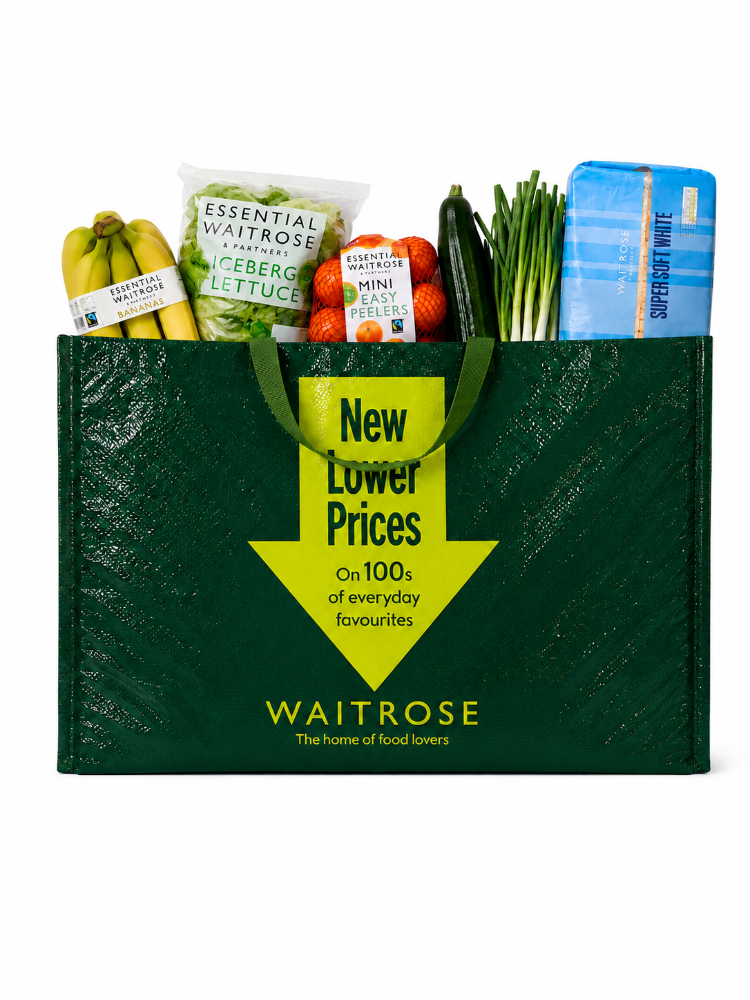
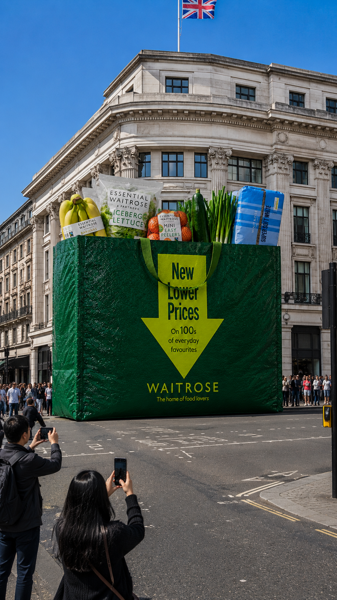
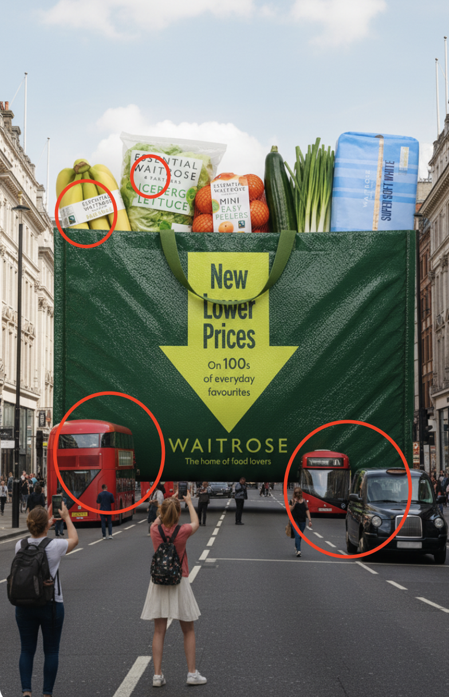
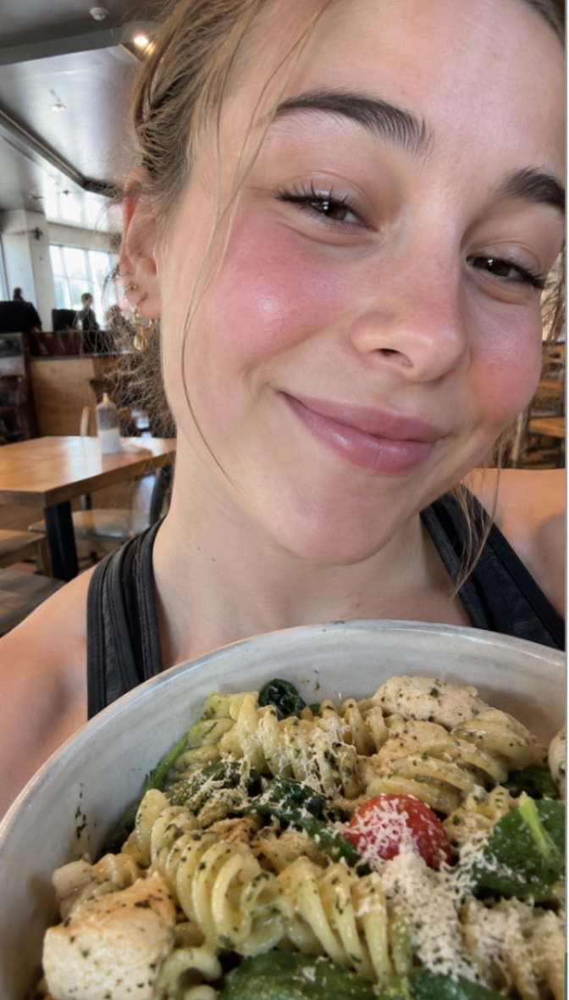
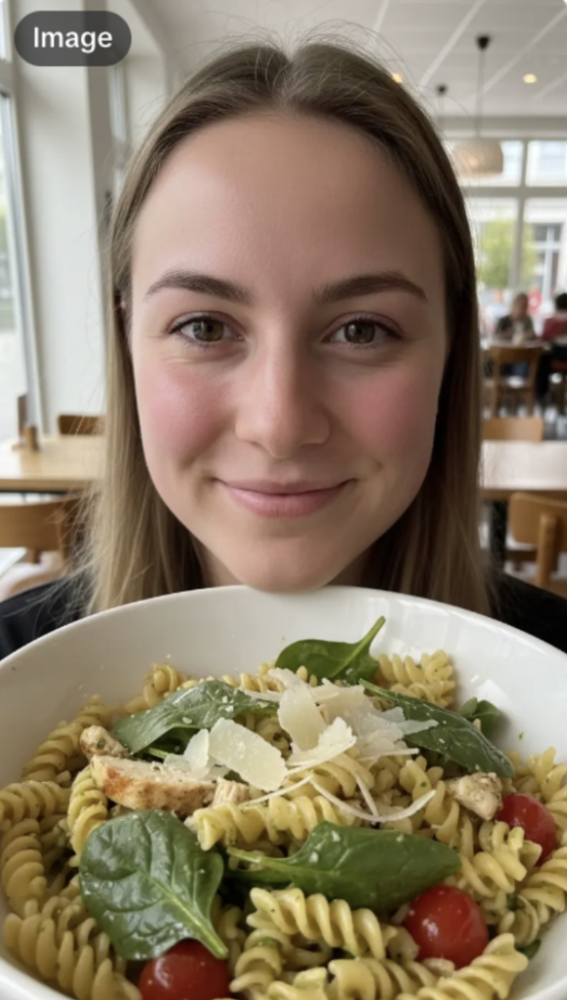
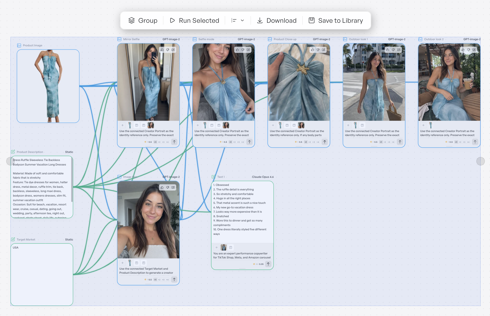
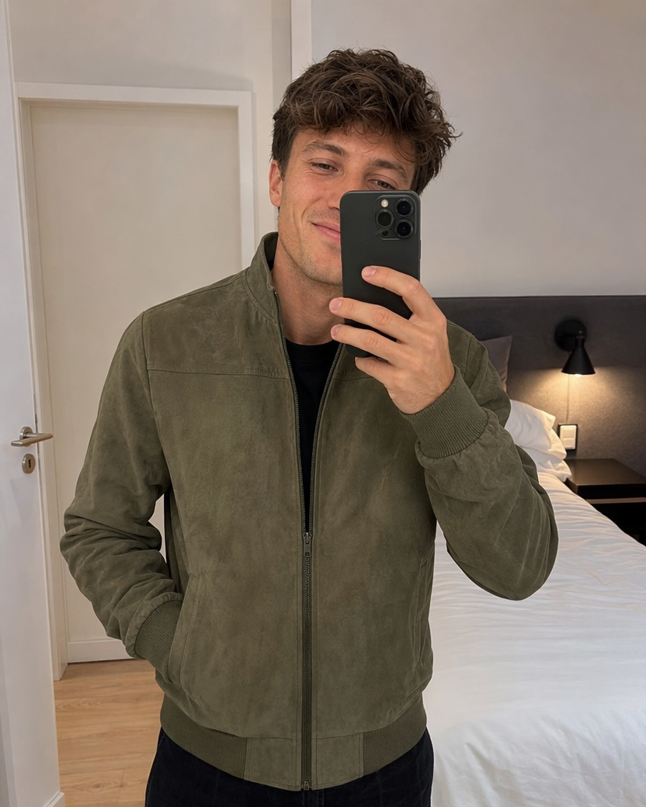
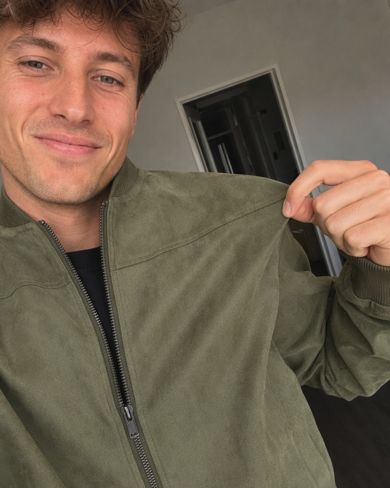
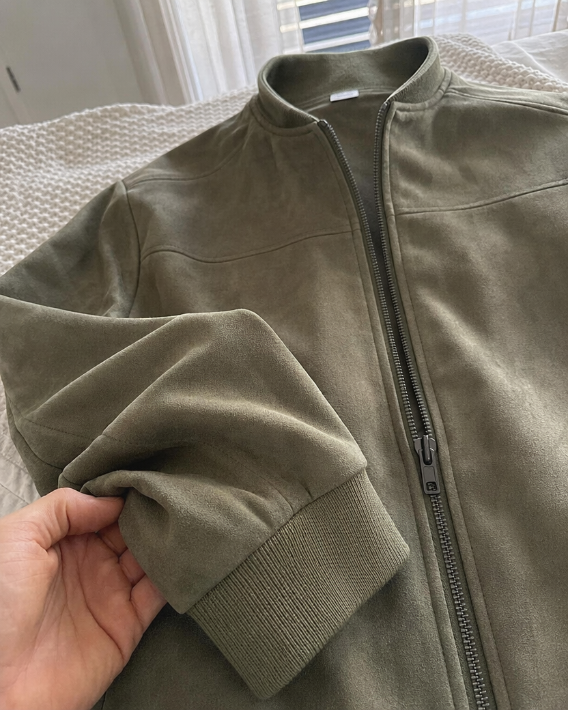

TikTok
Symphony Learnings
From individual generation tools to a connected, intelligent creative-production workspace.
Five questions to frame the conversation.
Who we work with
How we produce today
Where Symphony fits
Why external tools remain
What would make Symphony the default
We have specialized in performance-driven UGC for years—helping sophisticated marketers explore how AIGC can support and scale creative strategy.
Our role sits at the intersection of platform-native creativity, production craft and measurable performance.
Different environments. One uncompromising commercial standard.
Global brands and international advertisers
TikTok and platform-funded programs
Performance-focused clients requiring rapid creative testing
Multi-market campaigns requiring localization and cultural adaptation
Speed + volume
- Fast turnaround
- High creative volume
Accuracy + nativeness
- Strong product fidelity
- Platform-native content
Freshness + testing
- New angles to combat fatigue
- Expansion across audiences, markets + formats
Consistency + usability
- Consistency across markets + deliverables
- Commercially usable—not just impressive
AI accelerates the system. Humans interpret, direct and protect the outcome.
Brief + Assets
Review the client brief, product information and supplied assets.
- Brand requirements
- Products + references
- Dos and don’ts
Human Strategy
Research winning ads, creative patterns and platform trends.
- Performance signals
- Market context
- Audience insight
Creative Concept Ideation
Develop concepts, angles, scripts and visual directions.
- Hooks + story
- Creator direction
- Variation plan
Asset Generation
Generate the required images, video and supporting creative assets.
- Inspect accuracy
- Test alternatives
- Maintain continuity
Human Post-Production
Correct product inconsistencies, distortions, logos, UI, typos and spelling.
- Overlays + captions
- Voiceover + pacing
- Branding + transitions
Client-Ready Output
Create fatigue-management and expansion variations, then prepare outputs for review and delivery.
- Final quality control
We select for strength at each production stage.
| Workflow need | Tools we use | Why |
|---|---|---|
| Strategy + prompting | ChatGPT, Codex, Claude, Atria | Concepts, scripts and prompts informed by performance data and prior creative learning. |
| Image generation | ChatGPT, Nano Banana Pro + external models | Image quality, instruction-following, fidelity, references and creative control. |
| Video generation | Seedance, Kling via Higgsfield, Creatify, Lovart | Broader model access, templates, speed, fewer limits and flexible references—including AI creator faces. |
| Automated workflows | Creatify, Higgsfield, TapNow | Repeatable production, batch creation, connected steps and creative-agent assistance. |
A valuable ecosystem advantage—used primarily for creation.
Direct connection to TikTok, top-performing formats across verticals, native creative features and accessibility for less technical users.
Trends
OccasionalInspiration, emerging trends, high-potential videos and creative concepts.
Create
PrimaryImage and video generation represent the majority of our Symphony usage.
Tools
Almost noneVoiceover, Avatars, Remix and Video Editor are not yet intuitive or efficient enough for production.
Agent
ExploringAdaptation tests still require significant human input or have not yet delivered enough practical value.
We will compare the platforms across three areas that directly affect our ability to produce high-volume, performance-focused content:
Content generation
Node-based workflow automation
Creative Agent capabilities
Can the product survive the generation?



Evaluate shape, proportions, color, packaging, logo and text accuracy, reference consistency, natural placement and the amount of post-production correction required.
Does it feel captured—or manufactured?
Creative direction
Compare both outputs against the same prompt: authentic UGC appearance, natural expression and body language, realistic skin and environment, smartphone composition, organic lighting and accurate product interaction.
For creator-led advertising, realism is not enough. The image needs to feel like authentic TikTok content created by a real person—not a polished commercial photoshoot.


When volume rises, manually repeating each generation step becomes the bottleneck.
- Batch production and repeatability
- Consistent visual narrative
- Change one variable, preserve the system
- Reuse successful workflows across products

Symphony offers individual tools, but not yet a canvas that connects, automates and reuses the complete workflow.
From product image to complete narrative—in one run.



Agent-built workflow
With a simple natural-language request, the Agent can automatically build the complete node-based canvas for the user.
Direct video output is not an editable workflow.
Symphony’s Agent generates videos rather than building a node-based canvas.
Accessible
Less technical setup
Faster
Request to workflow quickly
Reusable + editable
Customize and scale
Viral-video and winning-concept adaptation
A winning concept is a system of choices—not a surface style.
Our Codex or Claude skills analyze five connected creative layers, then adapt them through agency-defined rules.
A stronger Symphony Agent could let users:
- 01Define which source elements must be preserved
- 02Set brand- and agency-specific adaptation rules
- 03Choose the level of similarity to the source
- 04Edit the Agent’s analysis before generation
- 05Learn from revisions and approved outputs
The gap is connection—not access to isolated AI features.
| Capability | External + custom tools | Symphony today | Opportunity |
|---|---|---|---|
| Content generation | Greater fidelity, UGC realism and reference control | Convenient ecosystem generation; usability varies | Improve reference control and TikTok-native output |
| Node canvas | Connected, reusable high-volume workflows | Not currently available | Editable workflow automation |
| Workflow Agent | Builds executable canvases from requests | Primarily ideation and adaptation | Build and modify production workflows |
| Adaptation Agent | Custom rules and output formats | Less accurate and difficult to customize | Rules, editable analysis and reusable instructions |
Symphony has strong models, valuable TikTok intelligence and a clear ecosystem advantage. The opportunity is to connect them into scalable production.
Six connected priorities for a scalable creative-production workspace.
Stronger content quality + control
Product consistency, reference accuracy and authentic UGC.
More flexible generation
Stronger models, faster output, fewer restrictions and broader references.
Node-based workflow automation
Connect generation steps into reusable production systems.
A more capable Creative Agent
Stronger brief understanding + Agent-built editable workflows.
High-volume controlled variation
Scale hooks, creators, languages, markets, settings and CTAs.
Performance-data-driven intelligence
Use real TikTok performance data to guide creative from proven patterns.
The future is not another canvas.
It is a canvas that knows what works.
Generation + connected workflows + TikTok intelligence.
That combination could move Symphony from a useful part of our stack to the place where the entire production system begins.